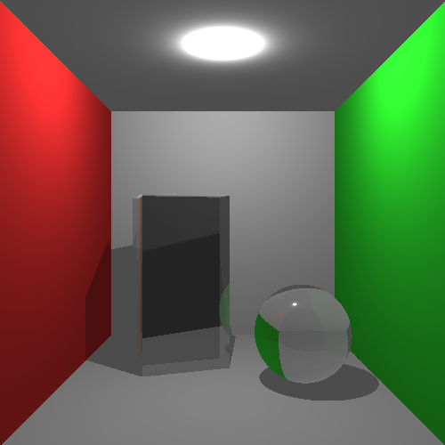
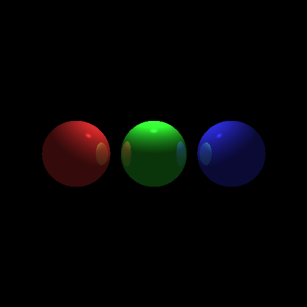
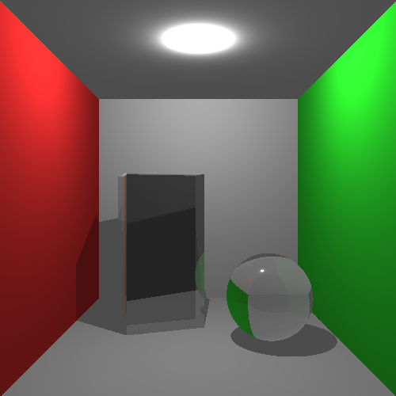
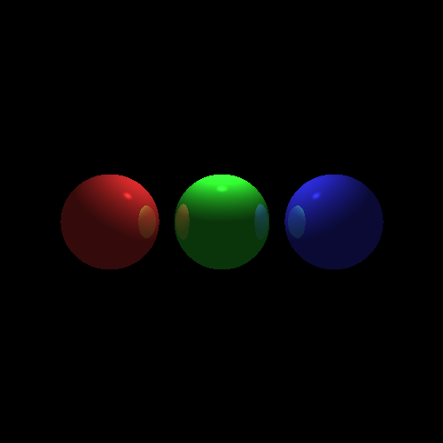

As a part of a project in the course DH2323 Computer Graphics and Interaction at KTH I implemented a basic ray tracer in C++ and SDL.
The ray tracer was an extension on one of the lab assignments I made in the same course. The implemented ray tracer can render diffuse and specular materials on triangulated meshes and spheres. The ray tracer also renders hard shadows. Refraction was also implemented as a part of the ray tracer to be able to render transparent materials.
If you want to learn even more about the project you can read the project report that is available here:
Project report
 


